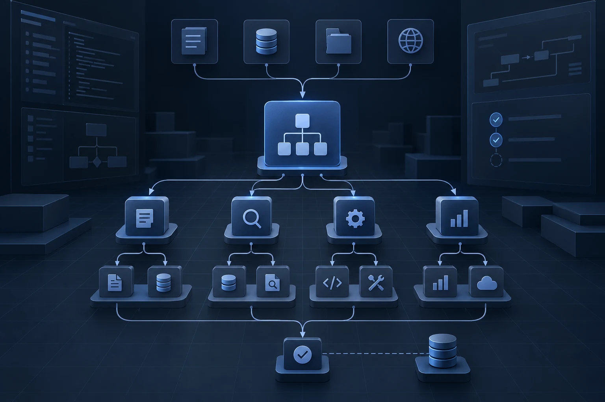
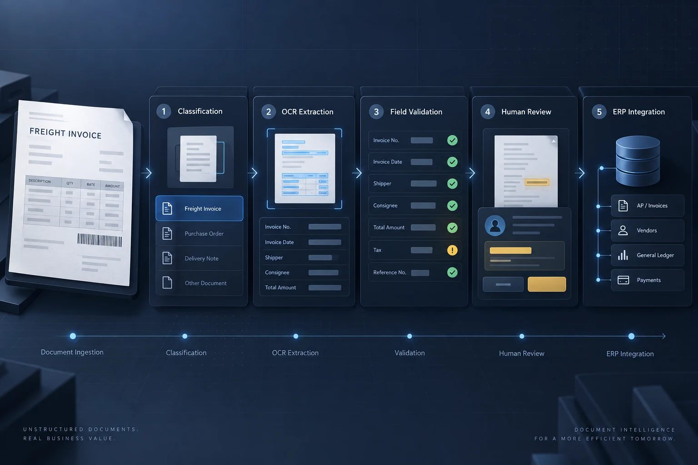
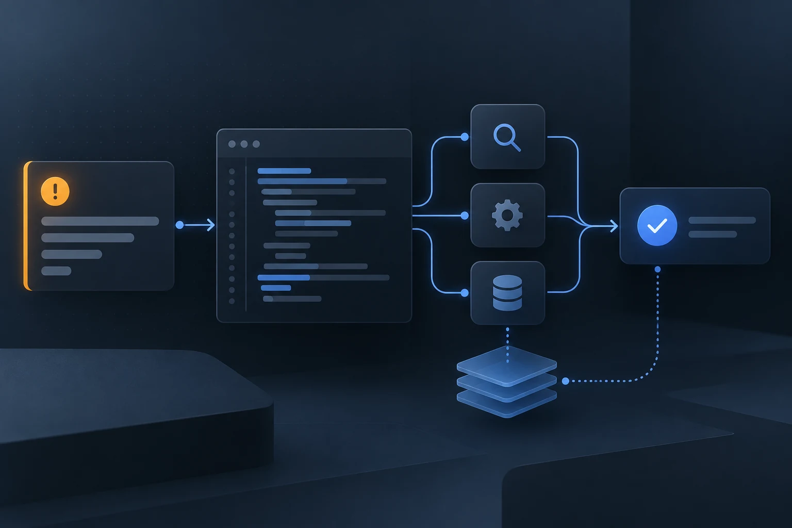
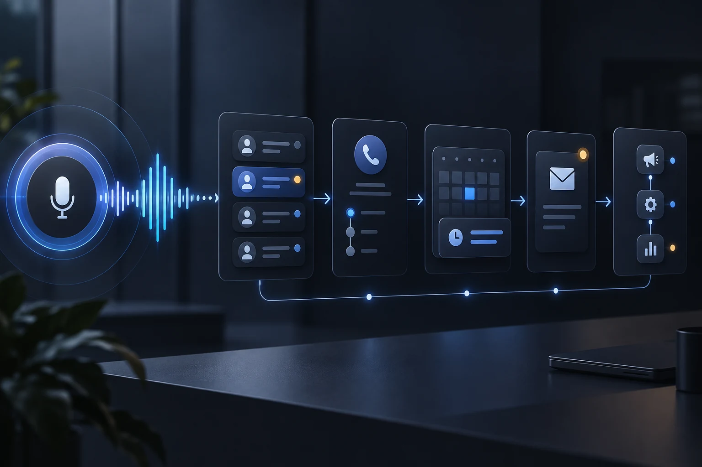

Agentic AI Systems
Supervisor-worker orchestration, tool calling, sub-agent delegation, streaming, retries, and checkpointing.
Software Engineer · AI/ML
I take AI product ideas from architecture to reliable software—combining agent workflows, backend engineering, infrastructure, and deployment.
01 / Capabilities
I work at the intersection of AI models, backend engineering, product requirements, and production infrastructure.
Supervisor-worker orchestration, tool calling, sub-agent delegation, streaming, retries, and checkpointing.
Ingestion, embeddings, contextual retrieval, structured extraction, validation, and evidence-grounded generation.
Real-time computer vision, speech intelligence, recommendation workflows, and optimized edge inference.
Production APIs, asynchronous workflows, data systems, object storage, containers, and cloud deployment.
02 / Selected work
Selected production systems where the hard part was connecting intelligence to reliable workflows.
Building a supervisor-worker platform that turns complex requests into coordinated agent execution across tools, models, and long-running workflows.

Built document pipelines that transform unstructured invoices and business files into validated data and downstream actions.


AI capabilities for bug reproduction, contextual analysis, and resolution assistance inside an intelligent developer platform.

Automated outbound calling and follow-up workflows connecting conversational AI to practical campaign operations.
Optimized object detection and face recognition for constrained hardware, and built live surveillance workflows across multi-camera RTSP streams.
Multi-label categorization with confidence-based predictions, human review, inference APIs, and a retraining pipeline.
Wardrobe intelligence using authentication, purchase-history analysis, categorization, and personalized recommendations.
Server-side transcription with speaker diarization, identification, and word- and sentence-level timestamps.
Backend services for performance analysis, recommendations, AI avatars, speech services, and payments.
03 / Experience
A career built around taking larger parts of the product and engineering lifecycle into my hands.
Building agentic AI orchestration, enterprise RAG and document intelligence, financial due diligence workflows, and the backend infrastructure that supports long-running AI execution.
Led AI projects from requirements and system architecture through development, deployment, production support, and mentoring—across surveillance and fashion technology.
Built production AI backend services, intelligent developer tooling, MCP and OAuth integrations, vector workflows, and deployed speech intelligence pipelines.
04 / Technical stack
Strongest in Python and AI backend engineering, with broad experience across the systems needed to ship.
LLMs · Agentic AI · RAG · LangGraph · LangChain · MCP · Prompt Engineering · Embeddings · Vector Search · Tool Calling
Python · FastAPI · Django · REST APIs · SQLAlchemy · Celery · PostgreSQL · MySQL · MongoDB
Qdrant · ChromaDB · Pinecone · Redis / Valkey · MinIO · Docker · Asynchronous Processing
TensorFlow · Keras · Scikit-learn · PyTorch · Hugging Face · YOLO · Whisper · OpenCV · OCR
AWS · Azure · GCP · GitHub Actions · CI/CD · Linux · Git · MLflow
JavaScript · SQL · C++ · Java · Angular · Vue.js · n8n · Google APIs · Slack API
05 / About
I’m an AI and product engineer who enjoys turning ambiguous problems into working systems. My best work happens where models meet backend logic, product constraints, and production infrastructure.
I care about understandable architecture, reliable execution, and building the review and failure paths that make AI genuinely useful—not just impressive in a demo.
Awards at Linearloop
Above & Beyond · Jan 2025Jugaad King · Jun 202406 / Contact